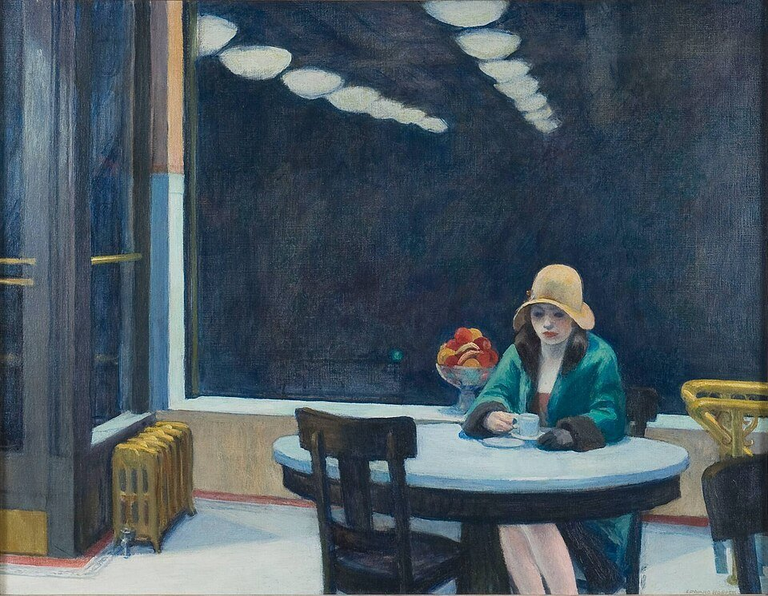

Automat
Edward Hopper · 1927 · Oil on canvas · 71.4 × 91.4 cm · Des Moines Art Center
In copyright. Look and learn: shown for study, not for download.
The model for the woman was Hopper's wife, Jo, who was forty-four in 1927; he made her face younger and changed her figure. The painting was first shown on Valentine's Day 1927, at the opening of his second solo show at the Rehn Galleries in New York, and it had sold by April for $1,200. Automats were open at all hours and served more than ten thousand customers a day. The Des Moines Art Center owns it.